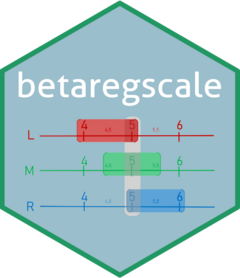

C++ log-likelihood for fixed-dispersion beta interval regression with mixed censoring
Source:R/RcppExports.R
dot-betaregscale_loglik_fixed_cpp.RdComputes the total log-likelihood for a beta regression model with interval-censored responses and a single (scalar) dispersion parameter, supporting all four censoring types (Lopes, 2024, Eq. 2.24).
Usage
.betaregscale_loglik_fixed_cpp(
param,
X,
y_left,
y_right,
yt,
delta,
link_mu_code,
link_phi_code,
repar
)Arguments
- param
Numeric vector: first
ncol(X)elements are beta coefficients, the last element is the scalar dispersion parameter.- X
Design matrix (n x p).
- y_left
Numeric vector of left interval endpoints on (0, 1).
- y_right
Numeric vector of right interval endpoints on (0, 1).
- yt
Numeric vector of midpoint response on (0, 1).
- delta
Integer vector of censoring indicators (0,1,2,3).
- link_mu_code
Integer code for the mean link function.
- link_phi_code
Integer code for the dispersion link function.
- repar
Integer reparameterization type (0, 1, or 2).